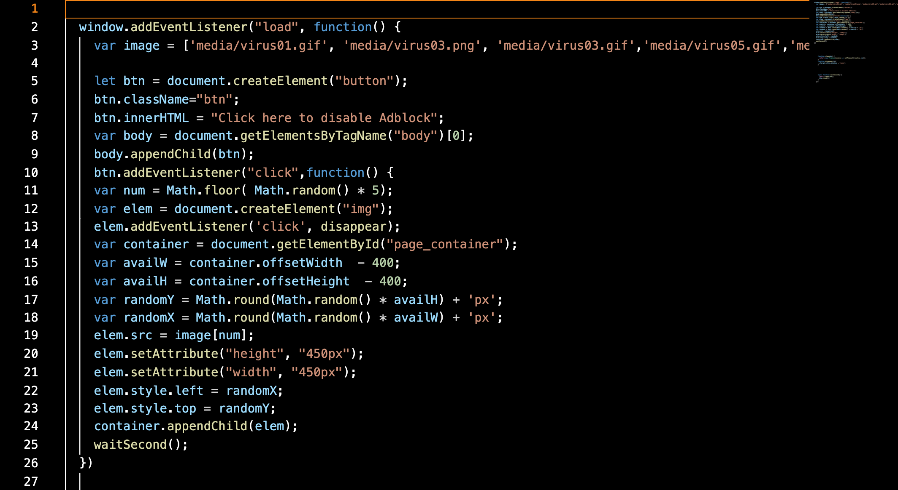

The prompt for this particular assignment is to create a unique, interactive,
browser-based toy. I chose to make a parody of a computer virus, with the
random generator javascript code I was already familiar with.
I initially wanted to make a game where the player has to move their
cursor around in order to avoid the pop-ups, but that proved to be a
long-term project. I instead settled on a simple click-to-disappear game,
where users can click on the pop-up ads to make them disappear.
All artwork in this game is done by me with the help of Asperite, an 8-bit drawing
and animating tool. I based many of the designs off of stereotypical scam ads,
but also added a few more original ones that are slightly more positive. Overall,
I'd say this is a great deal less stressful than an actual computer virus. I got to
practice a lot of javascript while making this game, specifically "windows.getEventListener"
and the "sleep" function.
I ran into a lot of issues.
Namely, randomly generating images without the continuous clicking as well as faulty buttons.

In the end, a new event listener was added which solves the issue


this is the background: